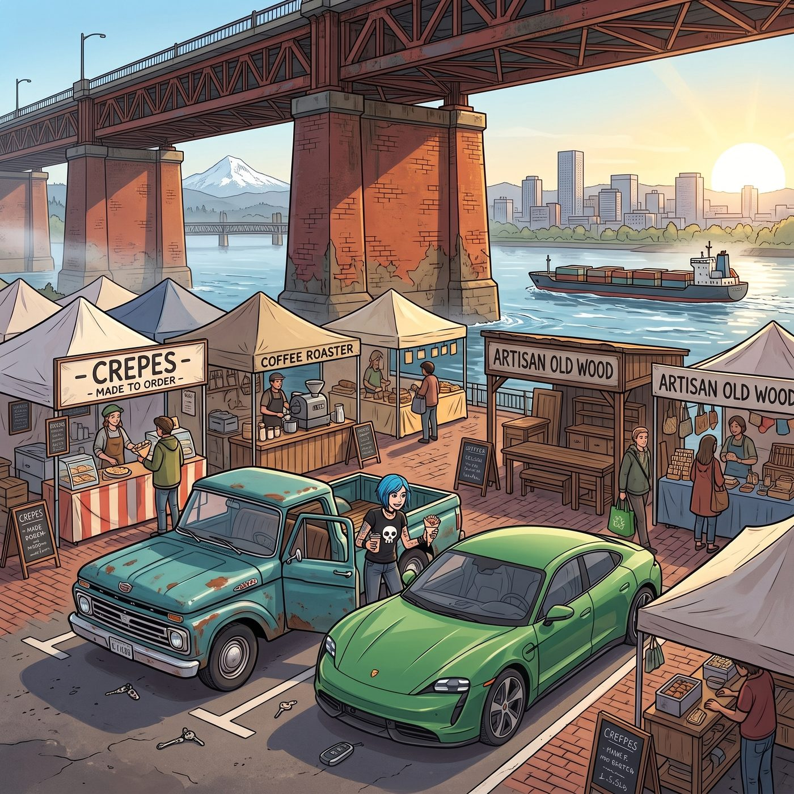

週六市集


週六上午九點半，威拉米特河畔的微風吹散了晨霧，波特蘭週六市集在紅磚橋墩下徹底甦醒。
老皮卡和保時捷並排停在附近的收費停車場。Chloe 剛熄火跳下車，就深深吸了一口空氣中瀰漫的現烤可麗餅、烘焙咖啡豆與老木頭混合的氣味，整個人瞬間進入了「獵人模式」。
四個人沿著熙熙攘攘的露天通道向前走，很快在各自感興趣的攤位前分頭行動。
一、Kate 的陶藝尋寶
Kate 在市集最深處找到了那位專門製作柴燒無釉陶器的老爺爺攤位。
她半蹲在木架前，雙手小心翼翼地捧起一隻帶著粗糙落灰紋理的紅陶花盆，眼神專注地觀察盆底的排水孔與透氣孔徑，輕聲向攤主請教陶土的透水性與保溫特點。
老手藝人原本板著的嚴肅面孔在 Kate 溫柔而專業的探討下徹底融化，不僅主動給這套花盆打了七折，還額外贈送了一小袋自己配製的火山岩多肉鋪面碎石。
二、Max 的相機考古
Max 穿梭在幾個堆滿舊鐵盒與老收音機的雜物攤之間。
在一個不起眼的木箱底層，她憑藉著敏銳的觀察力翻出了一整包未開封的 1990 年代過期柯達黑白相紙，以及兩卷保存完好的富士 120 彩色負片。
正當攤主準備開出高價時，身旁戴著墨鏡的 Victoria 優雅地走上前，用標準的藝術品估值術語挑出包裝邊緣的受潮痕跡，三言兩語便讓攤主乖乖將價格砍半成交。
三、Chloe 的機械狂歡
Chloe 徹底扎進了五金與舊工具攤位。
她在一堆廢棄的自行車齒輪、黃銅水管接頭和老式指針儀表盤裡瘋狂翻找，手裡迅速積攢了一整套可以用來改裝天台自動灌溉系統的微型高壓閥門。
面對攤主的漫天要價，Chloe 直接從後褲袋掏出隨身攜帶的棘輪扳手，指著零件軸承的磨損間隙與金屬疲勞紋路侃侃而談，硬生生用汽修硬核知識把一堆「古董零件」按廢鐵價格全盤打包。
四、Victoria 的法式甜點
逛完幾輪後，Victoria 領著滿載而歸的三人來到了市集東側那輛極其精緻的法式可麗露餐車前。
她點了四份外皮烤得深焦微脆、內餡泛著朗姆酒與香草籽香氣的招牌可麗露。
原本對甜點不以為意的 Chloe 咬下一口後，眼睛瞬間瞪大，連帶著滿手的黃銅零件都差點掉在地上；Max 則在一旁咬著甜點，笑著舉起相機記錄下四人嘴邊沾著糖霜的滑稽瞬間。
「怎麼，」Victoria 挑眉，語氣裡帶著毫不掩飾的陰陽，「不是說『資本主義的精緻甜點都是在剝削勞工血汗換來的廉價快樂』嗎，Price？看妳這副吃得比誰都香的樣子，倒是挺享受這份『剝削』的。」
「我什麼時候說過這種話？」Chloe 一臉無辜地眨眨眼，嘴裡還嚼著滿口的可麗露，聲音裡忽然添了幾分刻意的悵然，「妳知道的嘛，蔡斯，風暴那陣子腦子裡進了不少水，有些記憶到現在還斷斷續續的，說不定就是那時候丟的。」
「妳這藉口，」Victoria 瞇起眼睛，語氣裡帶著明顯的懷疑，「用了都快半年了。」
「這不能怪我，」Chloe 一臉委屈，「創傷後遺症說來就來，誰能控制自己忘記什麼。」
「那妳倒是記得清清楚楚，上次贏了我三局瑪利歐賽車，妳把整個過程從頭到尾都吹噓了一星期。」Victoria 冷笑一聲，「怎麼偏偏這種對妳不利的話，妳的『創傷記憶』就選擇性消失了？」
「這叫大腦的自我保護機制，」Chloe 振振有詞，趁 Victoria 還在氣頭上的空檔，眼疾手快地伸出叉子，精準地從她盤子裡叉走了剩下大半塊可麗露，「而且既然妳都說這是剝削勞工的產物了，那老娘替妳消化掉，也算是在為勞工階級伸張正義。」
「妳這是強盜邏輯，還拿風暴當擋箭牌！」Victoria 徹底被氣笑了，一把撲過去想搶回自己的甜點，「還給我！那是我的份！」
兩人隔著木長椅拉扯起來，Chloe 舉著叉子和那塊搖搖欲墜的可麗露高高躲閃，Victoria 則死死抓著她的手腕不放，活像兩個在搶最後一塊糖果的小孩子。
「你們兩個，」Kate 在一旁看得直笑，「明明都還有自己的份沒吃完。」
Max 笑得肩膀直抖，飛快地舉起相機，把這場荒謬的甜點爭奪戰定格了下來。
正午的陽光透過鐵橋的鋼樑灑在河面上，四人抱著大大小小的戰利品坐在河畔的木長椅上，吹著微涼的河風，享受著波特蘭初夏最愜意的週末時光。